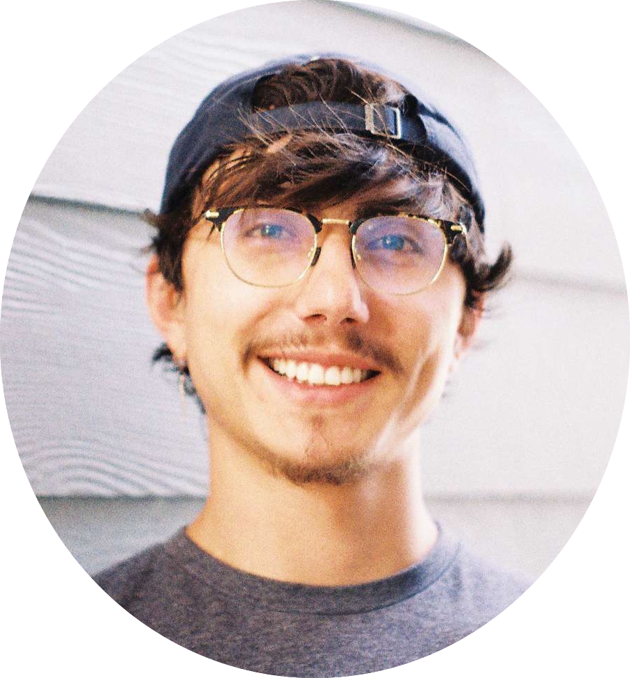

Hello there! I am an energetic computer scientist, creative problem solver, and thoughtful communicator with a passion for teaching, learning, and interdisciplinary collaboration. I am always striving to enhance our human experience by focusing on empathy, equality, and technical dexterity in an ever-changing world. In complement to my journey as a computer scientist, I am also a writer, philosopher, musician, filmmaker, gym-goer, and traveler.
#pride #loveislove #teamtrees #westutter
We’ve come too far 🧗🏽♂️ to give up who we are 🙌 So lets raise the bar 🏋🏽 and our cups 🥂 to the stars 🌠
How to navigate this site
Aristotle, the esteemed Greek Philosopher, believed that there exists three basic activities for the human mind: theoria, poiesis, and praxis. In honor of Aristotle’s wise teachings and historic legacy, I have structured my website by these three activities:
📖 Theoria: Activities for the sake of learning and truth seeking. My theoria consists of journalism, book reviews, tech articles, and the like.
💻 Poiesis: Activities for the sake of production. My poiesis consists of projects in all disciplines (software, art, video, etc.)
🛫 Praxis: Activities for the sake of action. My praxis consists of blog posts documenting my experiences (travel, conferences, food, etc.)
Contact Information
I am best reached via email: joeylovato1@gmail.com
Phone: (+1) 720-299-0136
General Experience
Below are a few highlights from my career (academic and beyond). A formal resume is available upon request
+ Industry
- Plentiful (Aug 2024 - Current): Associate Software Engineer
- Datava (Apr 2024 - Aug 2024): Implemented data activation software for credit unions (PHP, JavaScript, HTML, MySQL, Bash)
- Woodridge Software (RCG Global Services) (Sep 2023 - Nov 2023): Trained in Go, React, JavaScript, TypeScript, HTML/CSS, Network/Web Security
My internships in college included:
- VTO (Summer 2018): Digital Forensics
- Lockheed Martin Space (Summer 2019): Embedded C++ software for SmartSat
- Lockheed Martin Space (Summer 2020): Test scripting (TCL) for Lucy Spacecraft
- Lockheed Martin Space (Summer 2021): Mission operations flight rule development (Python) for the Lucy Spacecraft
- Tyler Technologies (Summer 2022): C# Web Development
+ Academics

Colorado School of Mines, Golden, CO
M.S. December 2022 Computer Science, Non-Thesis
B.S. May 2021
Major: Computer Science + Computer Engineering
Minor: McBride Honors Program – Minor in Public Affairs
Academic Roles
I worked across campus in various roles, primarily as assistants/adjuncts to undergraduate CS courses.
- CSCI200 (Data Structures & Algorithms) Adjunct / TA
- CSCI262 (Data Structures) TA; Lead TA; Adjunct Instructor
- CSCI101 (Intro to Computer Science) TA; Lead TA; Peer Mentor
- Mines Marketing and Communications Assistant (video production; video editing)
- Harvey Scholars Communications Coordinator
- Harvey Scholars 10th Anniversary Video Committee Lead
- oSTEM (Mines’ LGBTQ+ Organization) Secretary, Grad Student Liaison